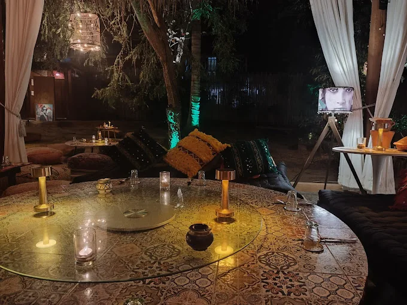

Contact & Location
Let's Plan Your Evening
Dinner by reservation and pre-order via WhatsApp.
- Reservations & Pre-order
- WhatsApp · +66 82 276 7757For the fastest response and reservations.
- General Enquiries
- hello@darmansour.comFor partnerships, private events, media, and general enquiries.
- Opening Hours
- Tuesday to Saturday · 7:00 PM – 10:30 PM
Closed Sunday & Monday